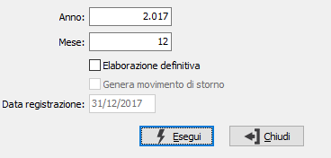

Stampa ventilazione corrispettivi
Il programma effettua il calcolo e la stampa, di prova o definitiva, della ventilazione dei corrispettivi.
La stampa definitiva della ventilazione è necessaria per il calcolo delle liquidazioni periodiche. Ne consegue che gli utenti che gestiscono i corrispettivi ventilabili sono tenuti alla stampa definitiva mensile o trimestrale dei registri Iva corrispettivi ventilabili.
La stampa, se eseguita in forma definitiva, deve essere effettuata sul registro dei corrispettivi ventilabili se si utilizza una sola serie di registri corrispettivi ventilabili. Nel caso in cui si utilizzino più serie (ad esempio, in caso di gestione di più negozi), la stampa deve essere effettuata sul registro riepilogativo prima della stampa della liquidazione periodica.
La stampa relativa al mese di Dicembre effettua il ricalcolo generale degli acquisti ventilabili di tutto l’anno, determina le percentuali di riparto fra tutti gli acquisti ed effettua il conguaglio generale sull’Iva a debito da corrispettivi ventilabili.

ANNO: Indicare l'anno di cui si intende effettuare l'elaborazione della ventilazione dei corrispettivi.
MESE: È il mese di cui si intende effettuare l'elaborazione della ventilazione dei corrispettivi; nel caso di trimestrale sarà obbligatorio inserire l'ultimo mese appartenente al trimestre.
ELABORAZIONE DEFINITIVA: Indica se effettuare una stampa di prova e riportare solo i dati calcolati (casella vuota) oppure effettuare una stampa definitiva aggiornando anche i progressivi Iva (casella con segno di spunta).
GENERA MOVIMENTO DI STORNO: attivo solo in fase di Elaborazione definitiva, indica se generare il movimento contabile di storno (casella con segno di spunta).
DATA REGISTRAZIONE: attivo solo in fase di Elaborazione definitiva, indica la data da utilizzare per la registrazione del movimento di storno.
Viene stampato il totale mensile degli acquisti ventilabili (Iva compresa) suddiviso per aliquote, e viene determinata la percentuale di incidenza di ciascuna aliquota. Sulla base di queste percentuali viene ripartito il totale degli incassi nelle varie aliquote. Gli incassi lordi per aliquota così calcolati vengono quindi scorporati per determinare l’imponibile e l’Iva corrispettivi per ciascuna aliquota.
Nel caso in cui venisse eseguita per errore una stampa definitiva, è possibile comunque eseguire nuovamente l'operazione; sarà richiesta un'ulteriore conferma indicando che l'operazione era già stata eseguita; la nuova esecuzione annulla la precedente ed effettua nuovamente tutti i calcoli.